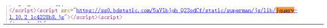
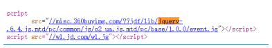
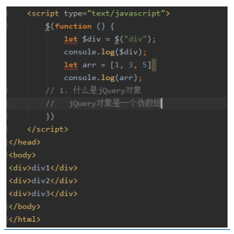
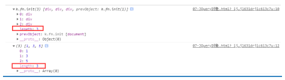

jQuery版本选择，入口函数，符号冲突，核心函数，对象，实例方法 and 静态方法
一，版本选择
一般面对如jQuery这样的文件的版本选择，大多人都会选择当然是版本越高越好，实则非其然也。
一般选择为 1.x 版本的（当然如果自己用的话，可以用3.x版本）
例如百度，京东等公司就用的 1.x版本
百度 ==> 
京东 ==> 
原因就是：1.x版本的 jQuery兼容IE6-8, 而高版本却抛弃了这一特性
至于是用压缩版本还是未压缩版本
二， jQuery入口函数和原生JS入口函数
a. 原生JavaScript的入口函数
1 windows.onload = function (ev) {
2
3 }b. jQuery的入口函数（四种写法）
1 $(document).ready(function () { })
1 jQuery(document).ready(function
2 (){
3
4 })❤（最简洁，企业开发推荐使用下面这种）
$(function () {
})
jQuery(function () {
})
两者之间的区别分为两类，一为加载，二为覆盖
One. 加载问题
Two. 覆盖问题
三，jQuery符号冲突
例如，引入jQuery后又导入一个JavaScript，其内部定义了一个变量
let $ = 777;于是导致了 多文件引入，$ 符号冲突问题
解决方法
1. 释放 $ 的使用权，改用 jQuery
jQuery.noConflict();2. 自定义一个访问符号，从而避免冲突
let nj = jQuery.noConflict();关键点
释放操作必须再编写其他jQuery代码之前
释放之后就不能使用 $, 改用jQuery或者自定义符号
四，jQuery核心函数
那么什么是jQuery核心函数呢，即：
1 // 1.
2 $();
3 // 2.
4 jQuery();jQuery核心函数可以接收的参数有四类（大致上）
一个函数
$(function(){
alert("This is a function");
})选择器
返回一个jQuery对象，对象中保存了找到的对应的DOM元素
1 let $box1 = $(".box1");
2 let $box2 = $("#box2");
一个字符串片段
返回一个jQuery对象，对象中包含了创建的DOM元素
let $p = $("<p>我是段落.jpg</p>");
console.log($p);
$box1.append($p);
一个DOM元素
返回一个jQuery对象，对象中包含DOM元素
let span = document.getElementByTagName("span")[0]
console.log(span);
let $span = $(span);
console.log($span);
五，jQuery对象
什么是jQuery对象
jQuery对象就是一个伪数组（有 0 到 length-1 的属性，并且有 length 属性）

六，jQuery静态方法和实例方法
实例方法
添加给类的原型的方法就是实例方法
1 Aclass.prototype.instanceMethod = function () {
2 alert("instanceMethod");
3 }
如何调用
先创建一个对象的实例，再通过实例调用
1 let a = new Aclass()
2 // 通过实例调用
3 a.instanceMethod()
静态方法
直接给类添加的方法就是静态方法
1 Aclass.staticMethod = function ()
2 {
3 alert("staticMethod");
4 }如何调用
通过类名调用
1 Aclass.staicMethod();